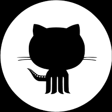
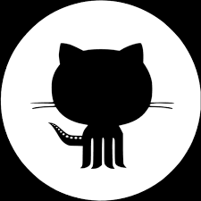

Nicole Martindale

 



Hello! I'm Nicole. I'm a former Software Engineer @Twitter and also a current Master's student in the Computer Science department at UCSD. In Summer 2021, I worked at Twitter as an engineering intern on the Ads Measurement Platform team, and became a full time Software Engineer on the team from July 2022 until Nov 2022. I have previously worked at Qualcomm as a SWE intern on the Connectivity/Stability team and the Audio Processing team. Throughout my undergraduate program at UCSD, I was a computer science tutor for several classes including CSE 12 - Data Structures and CSE 110 - Software Engineering. I was also a head tutor for CSE 15L - Software Tools.
I am extremely passionate about increasing diversity in STEM, especially in CS.
Throughout my undergraduate and graduate experience, I have been involved in
the
CSE Diversity, Equity, and Inclusion (DEI) Community. Additionally, I volunteered as a Professional Mentor for the TechWomen program
while I was at Twitter to empower women leaders in STEM from Africa, Central and South Asia, and the Middle East.
In my undergrad, I was involved in research with the
UCSD Knight Lab
and the Davidson Lab.